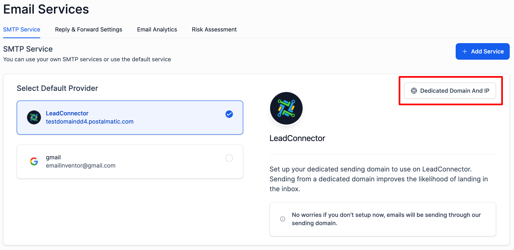
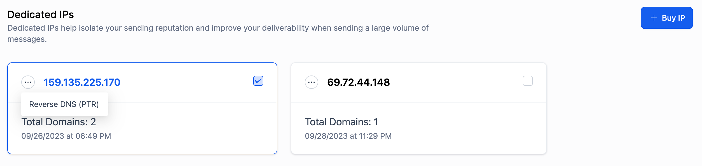
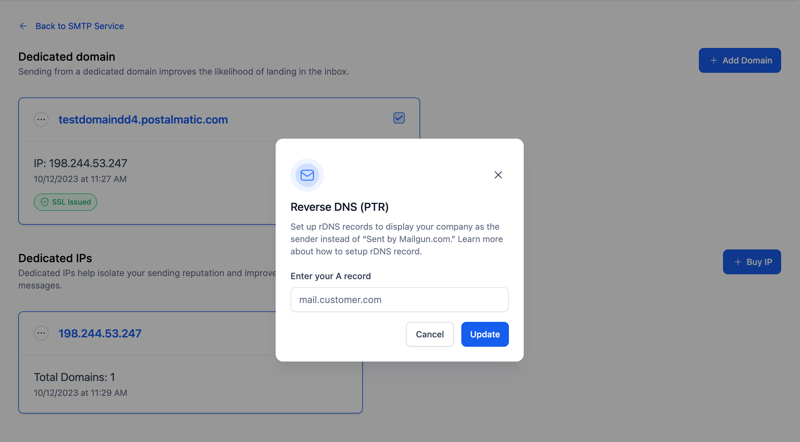

When recipients open your email, it's generally more advantageous to display your company name instead of "Sent by Mailgun" or another third-party service. By configuring reverse DNS (rDNS), mailbox providers can be directed to present your company name in the "From" or "Sender" field. This approach not only elevates the professionalism of your email communications but also strengthens your brand identity.
Furthermore, featuring your company name in the "From" field rather than a third-party service yields enhanced deliverability and tracking benefits. It fosters trust with recipients, diminishes the chance of your emails being flagged as spam, and assures consistent branding across your email campaigns.
In summary, applying your company name via reverse DNS settings presents a more positive, brand-centric method for email communications, enhancing both deliverability and tracking.
TABLE OF CONTENTS
What is reverse DNS (rDNS)?
Reverse DNS (rDNS) is essentially the reverse of a standard DNS query. Instead of mapping a domain name to an IP address, rDNS translates an IP address to its associated hostname. This process is applicable to both IPv4 and IPv6 addresses and verifies the authenticity of the sending email server.
In practical applications, rDNS converts the IP address of the sending email server into its corresponding hostname (e.g., example.com). This verification affirms that the IP address relates to a legitimate domain. In email marketing, this allows you to use services like Mailgun to display your company as the sender, rather than "Sent by Mailgun.com".
To clarify, this is distinct from masking the CNAME of mailgun.org in your DNS settings. Here, we're focusing on rDNS configuration for your dedicated IP used for emailing. Proper rDNS setup improves your email deliverability and branding by ensuring your company name is showcased as the sender in recipients' inboxes.
Common rDNS mistakes
Setting rDNS records accurately is vital for email deliverability and upholding a reputable sender status. Some frequent rDNS pitfalls include:
Incorrect PTR Record: One common mistake is not having a valid PTR (Pointer) record associated with your IP address. A PTR record is essential for verifying that the sending mail server matches the IP address claimed in the email message. Ensure that your PTR record is set up correctly and returns a hostname for the IP address being queried.
Mismatched Hostname: The hostname returned by the PTR record should resolve back to the same IP address. This means that the IP address should point to the hostname, and the hostname should point back to the same IP address. If there's a mismatch, it can lead to rDNS lookup failures. For example, if your PTR record is set to return "mail.yourwebsite.com" for IP address 8.8.8.8, it's crucial that when you perform an rDNS lookup for "mail.yourwebsite.com," it resolves to 8.8.8.8.
Hostname Resolution Failure: In some cases, the hostname specified in the PTR record may not resolve at all. This is a significant problem as it can lead to delivery issues and a lack of trust with email providers. To resolve this issue, ensure that the specified hostname resolves to the correct IP address.
In summary, rDNS is a critical component of email authentication and deliverability. To avoid common rDNS mistakes, make sure your PTR records are set up correctly and that the hostname returned by the PTR record accurately maps to the associated IP address. This alignment helps establish trust with email providers and improves the chances of your emails reaching recipients' inboxes.
How to set up rDNS?
It's important to note that setting up reverse DNS (rDNS) with multiple hostnames can only be done when using a dedicated IP. Shared IPs do not support this functionality, as rDNS can resolve to only one hostname per IP address. Utilizing a dedicated IP for this purpose adds a professional touch to your email communications and can positively influence your reputation with inbox providers.
To set up rDNS with multiple hostnames on your dedicated IP, follow the steps below:
Input the “A record” into your zone file at your hosting provider. An “A record” will look something like this: A, mail.customer.com, 123.45.67.89
- Navigate to settings -> email service.
- In SMTP service tab, Click on the Dedicated Domain And IP in LeadConnector section.

- Go the dedicated IP section and click on the three dots in dedicated IP and click on Reverse DNS (PTR)

- Provide the same A record that you have added in the input, and we’ll update the PTR record on our end to match the hostname you’re using.
